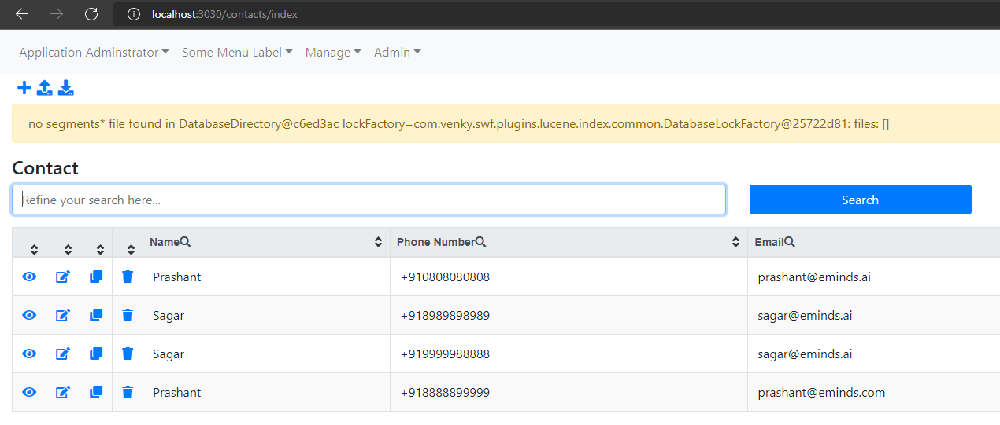

Welcome to Taxi BPP’s documentation!
We will host your documentation for free, forever. Some Logic There are no tricks. best starting point We help over 100,000 open source projects share their docs, including a custom domain and theme.
We will host your documentation for free, forever. There are no tricks. We help over 100,000 open source projects share their docs, including a custom domain and theme.
See screenshot above
Here’s some code:
public class AppMenuBuilder extends DefaultMenuBuilder{
}
Some instructions here
Serve over 55 million pages of documentation a month
- Serve over 40 TB of documentation a month
sub item
Host over 80,000 open source projects and support over 100,000 users
Are supported by a very small team of dedicated engineers
Caution
Read the Docs is open source and community supported. It depends on users like you to contribute to development, support, and operations.
Danger
You can learn more about how to contribute in our docs.
Tip
Thanks so much to our wonderful team who helps us run the site. Read the Docs wouldn’t be possible without them.
Note
Thanks so much to our wonderful team who helps us run the site. Read the Docs wouldn’t be possible without them.
outside admonition
Options
Guidelines